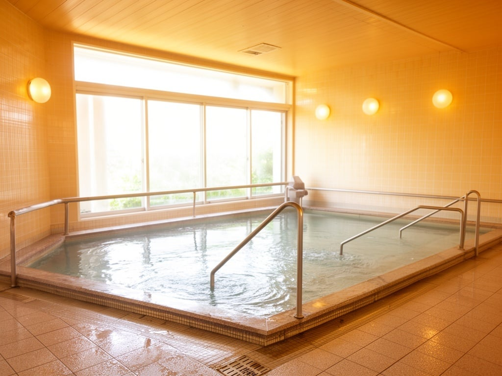

半日（3時間）
負担の少ない短時間
送迎あり
ご自宅まで送り迎え
入浴対応
銭湯方式・要支援も対応
無理のない運動
器具を用いた機能訓練
提携美容院
施設内でヘアカット
サービス詳細

送迎
ご自宅の玄関先まで、専用車でお迎えにあがります。車椅子の方も安心してご乗車いただけます。対応エリアについては施設概要ページをご確認ください。
- 安全運転を徹底しています
- 雨の日も濡れずに乗車できます

入浴
銭湯方式の広々としたお風呂で、ゆったりとリラックスしていただけます。スタッフが見守り、必要に応じてお手伝いしますので、安心してご入浴いただけます。
- 要支援の方もご利用可能です
- 入浴前の体調チェックを必ず行います
運動・機能訓練
無理のない範囲で体を動かす機能訓練を行います。専用のマシンを使った運動や、椅子に座ってできる体操など、お一人おひとりに合わせたメニューをご提案します。
- 機能訓練指導員がサポートします
- 楽しく続けられるプログラムです
提携美容院
施設内で提携美容師によるヘアカット等のサービスを受けられます。わざわざ美容院へ出かける負担を減らし、身だしなみを整えることで気分転換にもつながります。
- プロの美容師が担当します
- いつもの場所でリラックスして施術
1日の流れ
8:30
お迎え
ご自宅までお迎え
9:00
到着・健康チェック
バイタル測定・体調確認
9:30
入浴／運動
入浴、機能訓練など
12:00
お送り
ご自宅までお送り
施設長より
このまちで安心して暮らし続けられるよう、到着から3時間の中で「清潔」「からだ」「気分」が整う関わりを大切にしています。
無理のない運動と入浴・美容の支援を通じて、日々の小さな変化にも穏やかに寄り添います。皆様とお会いできることを心より楽しみにしています。
施設長：佐藤 健一
ご不明な点はお気軽にお問い合わせください
状況に応じて、必要な情報や手順をご案内します
まずはお気軽にお電話またはフォームよりご連絡ください。